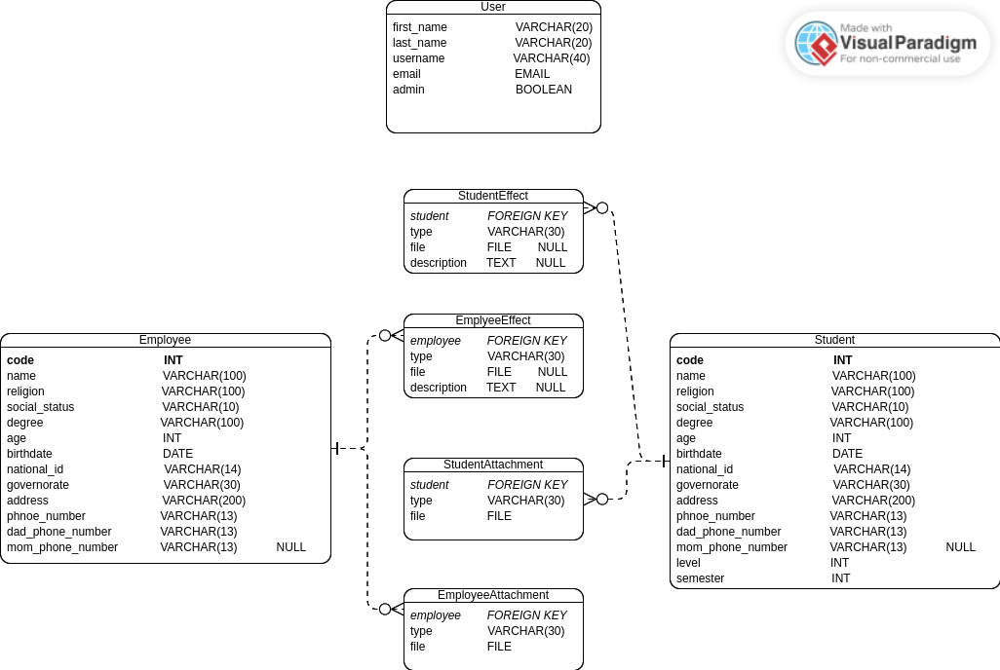
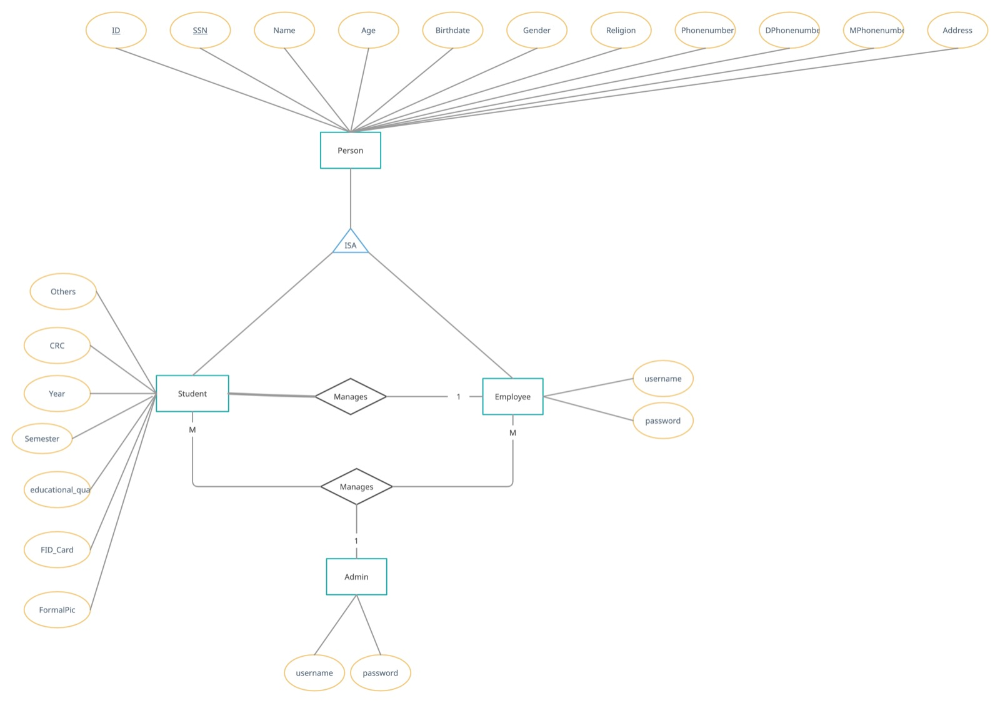

A management system for flight academy used to manage students and employees data and resources like attachments and so on.
A website hosted locally sith a user-friendly GUI that make it easier for employees to work with the system. first of all a login page to validate the user credintials in order to decide if should let that user in or not, a dashbaord contains the last updates, a page for adding students data, another to view and update teh already existing data, the same for employees with different attributes. that’s from a frontend POV. The back-end will be responsable for talking to the database, storing those data and retreiving’em case needed.
Using react as a front-end framework, building a ui, users can input data about students or employees with file attachments, sending that stuff to the back-end via REST APIs in JSON format. The back-end will use Django and Django REST framework in order to deal with those data, storing and retreiving them. building apps for students and employees, each with its models, their views will be responsable for each feature related to that model like adding student stuff or updating them, those views will take the data from the APIs and - after dealing with’em - responding with suitable data back. the system will use token-based authentication - maybe JWT - and postgresql database - cause sqlite won’t fil in that place - and there’ll be no signup cause the admin user will be able to add, update or delete users.
 